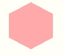
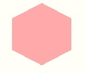
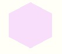
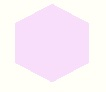

 


This game served as my Q1 project at Galvanize for Web Development. The point of the game is to find the hidden switches in each level to remove walls and find the exit. The game itself is an html table generated from a matrix of numbers at each level. 'The player' is also an html element that is removed and added to the next td element.
The most demanding part ended up being puzzle generation. Since each map is an array of arrays I had to generate them all in a way that makes sense, then figure out the mechanics of each. Easy, but time consuming. The most difficult part was making sure the visual aspect was a level of quality I was satisfied with. Making sure the grid resized well and visual aspect were responsive enough.
The whole project was extremely fun to do. I also had a great group of testers to help point out flaws. Start to finish the project took me about a week and a half to complete outside of work and I'm pretty proud of it.
You can play for yourself here!
Or view my Github repo here!